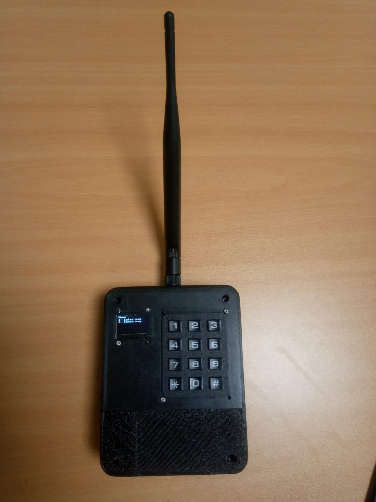

Ecomesh

Prototype at bottom of page
Enhancing Climate Resilience in Remote Communities Using Data and Technology
The Problem
Pastoralist communities face myriads of challenges due to the environment they live in. This includes scarcity of water and food, banditry, poor communication channels, and lack of access to sufficient information to navigate these problems. Our solution aims to tackle two of these challenges:
- Poor communication channels
- Insufficient information on migration corridors used
About LoRa and LoRaWAN
What is LoRa and LoRaWAN
LoRa (standing for “Long Range”) is a wireless modulation technique that enables long-distance communication with low power consumption. It’s based on Chirp Spread Spectrum (CSS) technology, which encodes information using chirp pulses. This method is robust against interference and can transmit data over great distances, making it ideal for Internet of Things (IoT) applications where devices need to send small amounts of data over long ranges. It is, however, unsuitable for large files such as streaming video. LoRa operates on the license-free ISM (industrial, scientific, and medical) band which is 433 MHz and 868 MHz in Kenya.
LoRaWAN, on the other hand, is a network protocol built on top of LoRa that defines how devices communicate and use the LoRa hardware. It’s optimized for low power consumption, allowing devices to operate for years on a single battery. This is particularly useful for applications like environmental monitoring and smart agriculture, where sensors and actuators are spread out over large areas.
LoRaWAN devices can communicate over distances of more than 10 km in rural areas and up to 3 km in urban environments due to attenuation and line-of-sight restrictions. This range can be increased by the use of LoRa gateways and nodes.
What are LoRa gateways/nodes?
LoRa gateways act as bridges between end-devices and a network server. They receive signals from various sensors and devices, process them, and then transmit the data to a network server, usually via high bandwidth connections like Ethernet or cellular networks. This technology operates on unlicensed bands, hence it’s legal to run your own gateway without a license, subject to local regulations. LoRa gateways can be found in various form factors, from minimal firmware-based devices to more complex ones which run full operating systems, allowing for greater flexibility and control over the network.
How can they be used for geolocation?
LoRa devices utilize a technology called Time Difference of Arrival (TDOA), which can determine the location of a device with an accuracy range of 75-150 meters depending on environmental conditions. This is useful for geolocation in rural areas where access to cell towers is limited. LoRaWAN networks support geolocation without the need for additional hardware, making it a cost-effective solution. The LoRa Cloud Geolocation Service further simplifies this by providing APIs that allow for the location estimation of devices using metadata like Received Signal Strength Indicator (RSSI), Signal-to-Noise Ratio (SNR), and Time of Arrival (TOA) of the radio signals. This service can locate devices within approximately 50 meters, which is suitable for many practical applications.
The Solution
We propose the use of LoRa technology which will provide a means for point-to-point communication over a limited range allowing pastoral communities to talk to each other. This will be in the form of small portable hand-held devices, akin to walkie-talkies. Establishing several gateways in the region that pastoral communities frequent will help increase the range of communication exponentially.
Further, the geolocation capabilities inherent in the LoRa technology will help gather information about the seasonal migration patterns of pastoral communities. This information, when compared to climate data from the season(s), will help inform humanitarian organizations about the response of pastoral communities to climatic changes and hence can be used to predict future migration corridors.
Advantages of the LoRa platform
- They offer long-range communication (up to 10 km in rural areas), making them ideal for remote areas where traditional communication infrastructure is lacking.
- They can be equipped with GPS modules to track the location of livestock or assets which is particularly valuable for pastoralists who move frequently, helping them manage and protect their herds over vast distances.
- Designed for low power consumption allowing them to operate for several years on a single battery, hence beneficial in areas with limited access to electricity. Incorporation of solar capabilities would make it easier for the pastoralists to charge their devices.
- Low deployment and operational costs compared to other wireless technologies.
- LoRa technology can support government and NGO efforts in delivering services and aid to pastoralists communities. For instance, vaccination programs for livestock or distribution of resources during droughts can be more effectively coordinated using real-time data from LoRa devices.
- They are resilient and can withstand harsh environmental conditions, making them suitable for deployment in remote and challenging terrains commonly inhabited by pastoralists.
- LoRa networks are highly scalable, allowing for the addition of new devices and sensors as needed without significant infrastructure changes. This is useful as the needs of the community grow.
Challenges anticipated
LoRa has a limited bandwidth designed for low data rate applications which makes it unsuitable for applications requiring high data throughput, such as video streaming or large data transfers.
There are security risks associated with LoRa networks such as encryption of the data being sent, and risk of tracking by nefarious groups. Ensuring the security of data transmitted over the network is crucial, especially in applications involving sensitive information, such as livestock tracking or financial transactions.
Deploying and managing a LoRa network requires technical expertise that may not be readily available in pastoral communities. This would necessitate training of local users and maintaining the network requiring ongoing support from technical experts or organizations.
Although LoRa networks are scalable, managing a large network of devices can become complex leading to emergence of issues such as network congestion and device synchronization which is necessary for geolocation.
Harsh environmental conditions, such as extreme heat, dust, or moisture, may affect the performance and longevity of LoRa devices.
Ensuring that devices remain operational in remote areas with limited access to power can be challenging due to need for battery replacements or periodic charging of devices.
How to make the design sustainable
Community Involvement and Ownership
- Involve community leaders and members early in the planning and deployment process to ensure the technology meets their needs and gains their acceptance.
- Provide capacity-building training for local community members to maintain and troubleshoot LoRa devices reducing reliance on external experts.
- Create community committees or cooperatives responsible for managing and overseeing the use and maintenance of the technology fostering a sense of ownership and accountability.
Robust and Durable Devices
- Design devices capable of withstanding the harsh environmental conditions typical of pastoralist regions, such as extreme heat, dust, and rain.
- Deploy devices with long-lasting batteries or capacitors, ensuring they can operate for years without replacement. We aim to make our devices solar powered to ensure continuous operation.
Data Management and Privacy
- Develop clear policies on data ownership, access, and usage to ensure that the community benefits from the data generated by the LoRa devices.
- Use the data collected from LoRa devices to inform community decisions about resource management, livestock movement, and other key activities.
Financial Models and Support
- Implement microfinance schemes or provide subsidies to help pastoralists afford the initial costs of LoRa devices and infrastructure.
- Partner with government agencies and NGOs to secure funding and support for the deployment and maintenance of LoRa networks in pastoralist areas.
Regular Maintenance and Support
- Establish a regular maintenance schedule for LoRa devices and infrastructure to prevent breakdowns and ensure longevity.
- Create a network of trained technicians within or near the community who can provide ongoing support and respond quickly to technical issues.
Sustainable Business Models
- Develop applications that generate income for the community, such as fee-based services for livestock tracking, weather forecasts, or water resource management.
- Implement subscription-based models where users pay a small fee for access to LoRa-enabled services, ensuring ongoing funding for maintenance and expansion.
Testing the functionality of the design
- First and foremost, we will test the range of the device. Typical ranges of LoRa devices are about 16km but this is subject to obstruction by various media. We will have to confirm how far the LoRa devices can communicate as this will be an important factor.
- Second, we will test the average power consumption of the device and solar charging aspect. We will have to get real data on power consumption of the device when in use over the day and if at all the onboard solar panel assists in charging the device. Knowing this will allow implementation of features to limit communication at certain times of the day to allow power saving.
- Third, the geolocation capabilities of the device may be assessed by monitoring the movement of a volunteer test subject around a fixed route.
- Lastly, we will have to hand these devices to the community members to see what use they make of them as well as how durable they are in the field.
Monetizing the design
- We can monetize the design through several methods. The first is the direct sale of the hardware, both LoRa radio devices and the LoRa gateways. This would be a one-time purchase, and may include the delivery and installation fees. Secondly, a small fee may be charged for the maintenance of the LoRa networks in case the local community is unable to do it for themselves. Finally, the processing and analysis of geolocation data may also be monetized in case the organizations requiring such data do not wish to go through the inconvenience of processing it for themselves. Charging a subscription fee for the use of the device, with lower initial costs, may come later in the event these devices are well adopted and made good use of by the community
Prototype
We already have a working prototype as below
